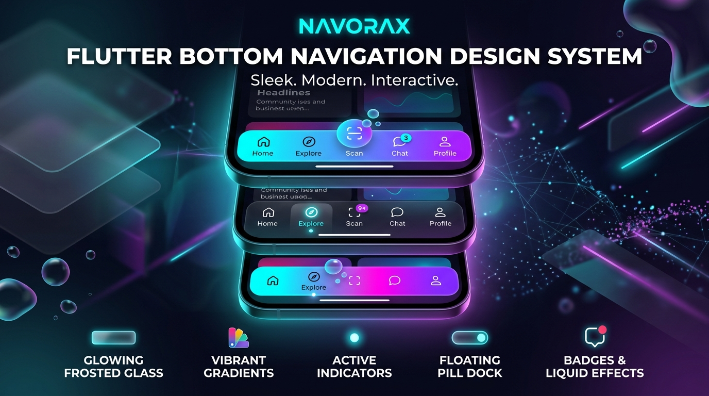

NavoraX is an enterprise-grade, highly customizable Bottom Navigation Design System for Flutter. Rather than just offering a basic collection of static widgets, NavoraX provides a powerful Navigation Engine, 1000+ Template Registry, Navigation Composer (NavoraXNavBuilder), Animation & Physics Engine, Adaptive Mobile Safe Area System, Context-Aware Navigation Controller, and Smart AI Generation abstractions.

Click on the bottom navigation tabs inside the simulated mobile screen below to test active indicator animations in real-time!
Add navorax package to your Flutter project's pubspec.yaml and
implement customizable bottom navigation bars instantly.
// 1. Basic NavoraX Widget Implementation
NavoraX(
currentIndex: _currentIndex,
items: const [
NavoraXItem(icon: Icons.home_outlined, activeIcon: Icons.home_rounded, label: 'Home'),
NavoraXItem(icon: Icons.explore_outlined, activeIcon: Icons.explore_rounded, label: 'Discover'),
NavoraXItem(icon: Icons.shopping_bag_outlined, activeIcon: Icons.shopping_bag_rounded, label: 'Cart', badge: NavoraXBadge(type: NavoraXBadgeType.count, count: 4)),
NavoraXItem(icon: Icons.person_outline_rounded, activeIcon: Icons.person_rounded, label: 'Profile'),
],
onChanged: (index) => setState(() => _currentIndex = index),
)Search and filter every parameter, configuration option, enum, and engine property available in NavoraX.
| Class / Object | Parameter Name | DataType | Default Value | Description & Usage |
|---|---|---|---|---|
NavoraX |
currentIndex |
int |
Required | Zero-based integer index of the currently active navigation item tab. |
NavoraX |
items |
List<NavoraXItem> |
Required | List of item models rendering icons, active icons, text labels, badges, and tooltips. |
NavoraX |
onChanged |
ValueChanged<int> |
Required | Callback function triggered when the user taps any navigation item tab. |
NavoraX |
template |
NavoraXTemplateEnum? |
null |
Selects one of the 1000+ ready-made template presets (e.g. glassMorph,
floatingPill, cyberpunk).
|
NavoraX |
config |
NavoraXConfig? |
null |
Custom configuration built via NavoraXNavBuilder or .copyWith(). |
NavoraX |
centerAction |
NavoraXCenterAction? |
null |
Notched center Floating Action Button (FAB) configuration with custom size, icon, shape, and
onTap.
|
NavoraX |
useSafeArea |
bool |
true |
Automatically adds bottom safe area inset padding for iOS Home Indicators & Android Gesture Bars. |
NavoraX |
adaptive |
bool |
false |
Enables automatic iOS/Android platform layout adaptation, OLED dark mode, and accessibility font scaling. |
NavoraX |
contextAware |
bool |
false |
Enables reactive navigation state switching via NavoraXController (e.g. checkout, compact,
hidden). |
NavoraX |
performanceMode |
NavoraXPerformanceMode |
auto |
GPU graphics scaling mode (auto, high, balanced,
low) to disable blurs on low-end devices.
|
NavoraX |
gestureMorphing |
bool |
false |
Allows users to swipe up/down on the navigation bar to expand or compact its height. |
NavoraXConfig |
shape |
NavoraXShape |
flat |
Container geometry (flat, rounded, floating, pill,
curved, wave, notched, liquid, dock,
capsule, stadium, hexagon, asymmetric).
|
NavoraXConfig |
indicator |
NavoraXIndicator |
lineTop |
Selection indicator (none, lineTop, lineBottom, dot,
pill, ring, glow, stretchy, liquidBubble,
backgroundFill).
|
NavoraXConfig |
animation |
NavoraXAnimation |
fade |
Transition animation curve & style (fade, slide, scale,
bounce, elastic, spring, morph, liquid,
pulse, gooey, wave, magnetic).
|
NavoraXConfig |
backgroundStyle |
NavoraXBackgroundStyle |
solid |
Background decoration (solid, glass, glassMorph,
neumorphicFlat, neumorphicConvex, neumorphicConcave,
gradient, transparent).
|
NavoraXConfig |
height |
double |
64.0 |
Container height in logical pixels. |
NavoraXConfig |
elevation |
double |
4.0 |
Container shadow elevation depth. |
NavoraXConfig |
blurAmount |
double |
16.0 |
Backdrop filter blur intensity for glassmorphic styles. |
NavoraXConfig |
activeColor |
Color? |
Color(0xFF6366F1) |
Selected item icon & label color. Automatically adapts in dark mode for high contrast. |
NavoraXConfig |
inactiveColor |
Color? |
Color(0xFF94A3B8) |
Unselected item icon & label color. |
Choose from traditional flat bars, floating capsule docks, notched center FAB cutouts, sine waves, and asymmetric hexagons.
NavoraXShape.flat — Edge-to-edge full width barNavoraXShape.floating — Floating rounded dock insetNavoraXShape.pill — Stretchy rounded pill barNavoraXShape.notched — Center FAB notch cutoutNavoraXShape.curved — Smooth concave top curveNavoraXShape.wave — Dynamic sine wave topNavoraXShape.liquid — Bezier liquid flow curveNavoraXShape.dock — macOS glass dock barHighlight active tabs with sliding line accents, floating dots, icon framing rings, glowing halos, and stretchy spring physics.
NavoraXIndicator.lineTop — Sliding top line accentNavoraXIndicator.lineBottom — Underline tab accentNavoraXIndicator.dot — Floating active dotNavoraXIndicator.ring — Icon framing ring circleNavoraXIndicator.glow — Neon radial halo glowNavoraXIndicator.stretchy — Stretchy spring barNavoraXIndicator.liquidBubble — Protruding liquid bubbleCombine matrix properties using the fluent builder pattern to create custom navigation designs effortlessly.
final customConfig = NavoraXNavBuilder()
.shape(NavoraXShape.pill)
.indicator(NavoraXIndicator.liquidBubble)
.animation(NavoraXAnimation.elastic)
.background(NavoraXBackgroundStyle.glassMorph)
.activeColor(const Color(0xFF00F2FE))
.height(68.0)
.elevation(8.0)
.blurAmount(24.0)
.borderRadius(BorderRadius.circular(30))
.build();
NavoraX(
config: customConfig,
currentIndex: _currentIndex,
items: items,
onChanged: onChanged,
)Auto-generate a complete NavoraXConfig instantly using natural language
prompts.
// Generate config using natural language prompt
final aiConfig = await NavoraXAI.generate("Frosted glass floating bar with cyan neon glow");
NavoraX(
config: aiConfig,
currentIndex: _currentIndex,
items: items,
onChanged: onChanged,
)